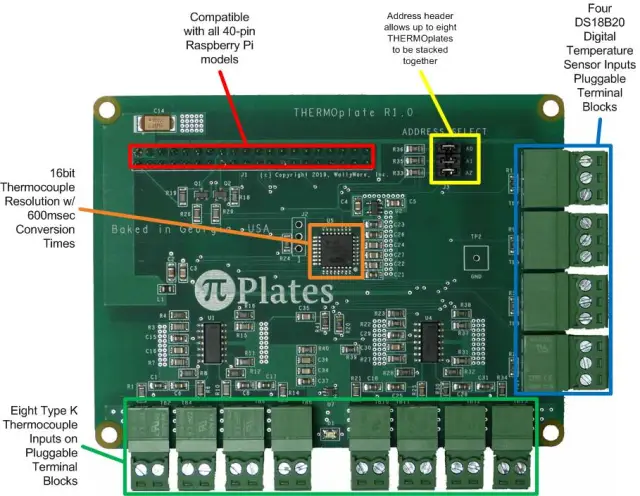

Featured Projects
Things I've built — from research experiments to full-stack applications
LexiMind: Multi-Task Learning for Literary & Academic Text
I investigated positive and negative transfer in a 272M-parameter multi-task transformer (FLAN-T5-base) jointly trained for abstractive summarization, topic classification, and emotion detection. I designed attention pooling and temperature-based task sampling to eliminate negative transfer in emotion detection, improving sample-averaged F1 from 0.199 to 0.352 (+77%) over naive multi-task learning. I ran controlled ablations across pooling strategies, task scheduling, and initialization — and I'm currently writing a paper based on the findings.
GitHub Repo →
F1 Race Outcome Predictor
I built an end-to-end ML pipeline ingesting FastF1 and Ergast data across multiple seasons, engineering features covering lap times, session deltas, and driver/team context. I trained a Random Forest regressor (MAE 1.78 grid positions, RMSE 2.28) and two Logistic Regression classifiers for Q3 and top-ten qualification prediction (93.8% and 92.6% accuracy). The interactive Streamlit dashboard includes scenario planning for upcoming races and full model diagnostics.
GitHub Repo →
Movie Recommendation System
Content-based filtering using TF‑IDF and cosine similarity to generate personalized recommendations over 10k+ movies.

PlayAxis: Full-Stack Sports & Events Platform
I built a platform aggregating real-time schedules, scores, and event data by integrating 3+ external APIs with a FastAPI backend (Pydantic validation) and a PostgreSQL database. Containerized with Docker and automated CI/CD via Netlify and Koyeb, reducing deployment time by 60%.
GitHub Repo →

Personal Portfolio Website
The site you're looking at right now. I designed and built it from scratch with HTML, CSS, and JavaScript, using GSAP and Lenis for smooth animations. Hosted on Netlify with GitHub for version control.

Formula 1 Statistics Analysis
Tableau dashboard analyzing Formula 1 data from 1950–2024. Visualizes drivers, constructors, and circuits across F1 history to uncover performance trends and insights.

IoT Monitoring System
I built a Raspberry Pi-based monitoring system for fossil fuel power plants during my internship at Triaxis Power. It tracks pipe temperature and thermal expansion using thermocouples and potentiometers, with automated cloud sync for continuous remote monitoring across multiple plant sites.
Sustainability Impact Analysis for Intel
A data-driven evaluation of Intel's 2024 device repurposing and recycling program, completed during my time with The Global Career Accelerator. I analyzed which devices to prioritize for maximum reductions in e-waste, energy consumption, and CO₂ emissions.
Grammy.com Analytics Dashboard
I conducted comprehensive data analysis for The Recording Academy's websites during my Data Science work with The Global Career Accelerator, providing data-driven insights into audience engagement and business performance metrics.